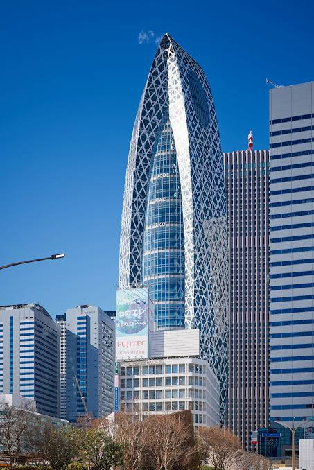
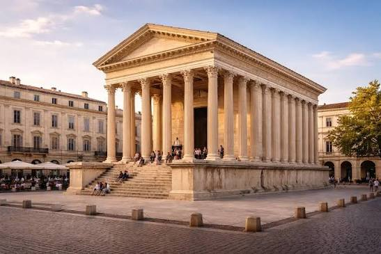
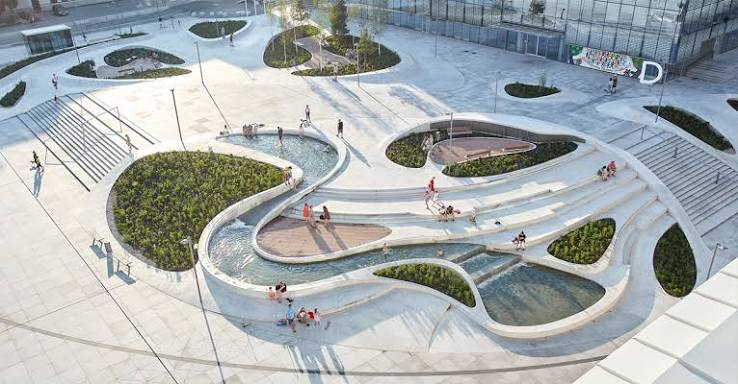
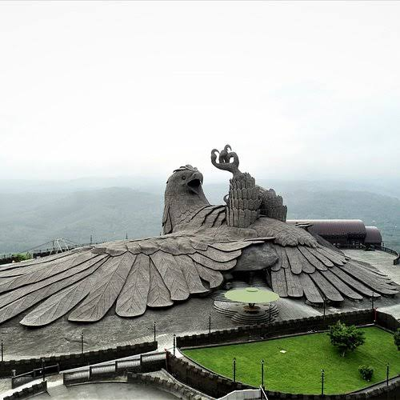
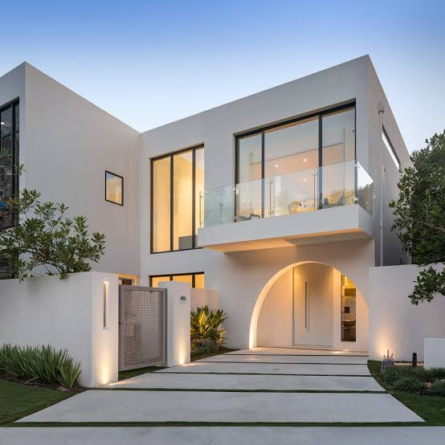
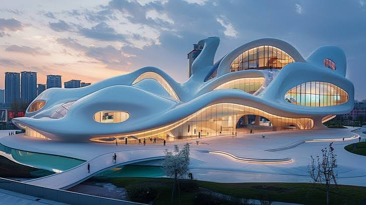
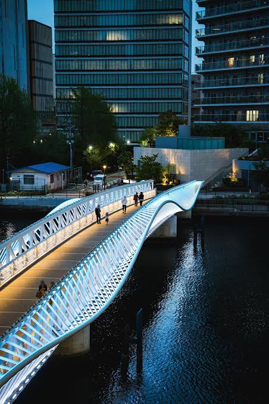

COMMERCIAL
2024
Modern Skyscraper
A striking example of contemporary architecture, combining clean lines, height, and innovative design.
Architecture galleries are unique spaces where the building itself frequently becomes the primary work of art, serving as a masterclass in spatial design. Whether engineered to house architectural blueprints or designed as standalone structural landmarks, these global examples showcase how exhibition spaces push structural boundaries.

A striking example of contemporary architecture, combining clean lines, height, and innovative design.

A timeless structure inspired by traditional architectural forms, where history and craftsmanship come together.

A sleek modern structure designed around glass, natural light, and a strong connection with its surroundings.

Thoughtful architecture created for modern cities, balancing functionality, comfort, and visual appeal.

A remarkable piece of architectural heritage that reflects the culture, stories, and craftsmanship of its time.

A simple yet elegant home where open spaces, natural light, and clean design create a peaceful atmosphere.

Bold architectural ideas that explore new forms, materials, and possibilities for the spaces of tomorrow.

Where engineering meets design, creating structures that connect people and places while making a visual statement.